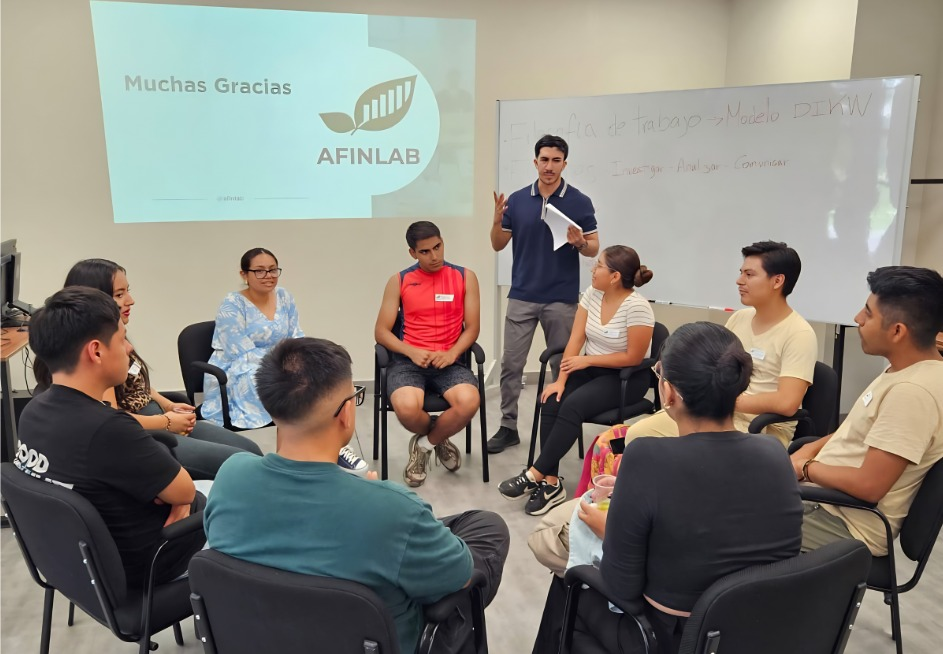

06
Proyectos
Activos
Activos
5
Empresas
Analizadas
Analizadas

Nuestra historia
Estudiantes de la Universidad Nacional Agraria La Molina, pertenecientes a las carreras de Ingeniería en Gestión Empresarial, Economía, Estadística Informática y todas aquellas interesadas en la gestión financiera sostenible.

Impulsar el análisis financiero y la toma de decisiones estratégicas.
Liderar la investigación y las finanzas aplicadas con impacto en el desarrollo económico.
Mejorar la toma de decisiones financieras en los sectores económicos del Perú.
Gestión de organizaciones. Estrategias empresariales y competitividad, gestión financiera y de riesgos.
Trabajamos en equipos multidisciplinarios, combinando teoría financiera con herramientas de análisis de datos, diseño de contenido y comunicación estratégica. Cada semestre desarrollamos proyectos reales que generan publicaciones, eventos y bases de datos abiertas.